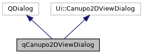
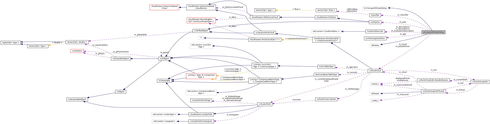

|
ACloudViewer
3.9.4
A Modern Library for 3D Data Processing
|
|
ACloudViewer
3.9.4
A Modern Library for 3D Data Processing
|
CANUPO plugin's 2D view dialog. More...
#include <qCanupo2DViewDialog.h>


Public Slots | |
| bool | trainClassifier () |
| Trains the classifier (with the current number of scales!) More... | |
Public Member Functions | |
| qCanupo2DViewDialog (const CorePointDescSet *descriptors1, const CorePointDescSet *descriptors2, QString cloud1Name, QString cloud2Name, int class1=1, int class2=2, const CorePointDescSet *evaluationDescriptors=0, ecvMainAppInterface *app=0) | |
| Default constructor. More... | |
| virtual | ~qCanupo2DViewDialog () |
| Destructor. More... | |
| void | setPickingRadius (int radius) |
| Sets picking radius (for polyline vertices) More... | |
| const Classifier & | getClassifier () |
| Returns classifier. More... | |
Protected Slots | |
| void | resetBoundary () |
| Updates the boundary representation. More... | |
| void | computeStatistics () |
| Computes statistics with the current classifier. More... | |
| void | saveClassifier () |
| void | checkBeforeAccept () |
| void | setPointSize (int) |
| void | onScalesCountSpinBoxChanged (int) |
| void | addOrSelectPoint (int, int) |
| void | removePoint (int, int) |
| void | moveSelectedPoint (int, int, Qt::MouseButtons) |
| void | deselectPoint () |
Protected Member Functions | |
| void | reset () |
| Resets display. More... | |
| void | updateScalesList (bool firstTime) |
| Updates the list of active scales. More... | |
| void | getActiveScales (std::vector< float > &scales) const |
| Returns the list of active scales. More... | |
| void | addObject (ccHObject *obj) |
| Adds a custom object to the 2D view. More... | |
| void | updateZoom () |
| Updates zoom. More... | |
| void | updateClassifierPath (Classifier &classifier) const |
| Updates classifier path with the currently displayed polyline. More... | |
| CCVector3 | getClickPos (int x, int y) const |
| Returns the click position in 3D. More... | |
| int | getClosestVertex (int x, int y, CCVector3 &P) const |
| Returns closest vertex. More... | |
Protected Attributes | |
| ecvMainAppInterface * | m_app |
| Gives access to the application (data-base, UI, etc.) More... | |
| Classifier | m_classifier |
| Associated classifier. More... | |
| bool | m_classifierSaved |
| Whether the classifier has been saved (at least once) More... | |
| const CorePointDescSet * | m_descriptors1 |
| const CorePointDescSet * | m_descriptors2 |
| const CorePointDescSet * | m_evaluationDescriptors |
| int | m_class1 |
| QString | m_cloud1Name |
| int | m_class2 |
| QString | m_cloud2Name |
| ccPointCloud * | m_cloud |
| Associated cloud. More... | |
| ccPolyline * | m_poly |
| Associated polyline. More... | |
| ccPointCloud * | m_polyVertices |
| Associated polyline vertices. More... | |
| int | m_selectedPointIndex |
| Currently selected polyline point. More... | |
| int | m_pickingRadius |
| Picking radius. More... | |
CANUPO plugin's 2D view dialog.
Definition at line 24 of file qCanupo2DViewDialog.h.
| qCanupo2DViewDialog::qCanupo2DViewDialog | ( | const CorePointDescSet * | descriptors1, |
| const CorePointDescSet * | descriptors2, | ||
| QString | cloud1Name, | ||
| QString | cloud2Name, | ||
| int | class1 = 1, |
||
| int | class2 = 2, |
||
| const CorePointDescSet * | evaluationDescriptors = 0, |
||
| ecvMainAppInterface * | app = 0 |
||
| ) |
Default constructor.
Definition at line 36 of file qCanupo2DViewDialog.cpp.
References checkBeforeAccept(), computeStatistics(), m_class1, m_class2, m_cloud1Name, m_cloud2Name, onScalesCountSpinBoxChanged(), resetBoundary(), s_firstDisplay, saveClassifier(), setPointSize(), and updateScalesList().
|
virtual |
Destructor.
Definition at line 117 of file qCanupo2DViewDialog.cpp.
References ecvDisplayTools::GetCurrentScreen(), m_app, and reset().
|
protected |
Adds a custom object to the 2D view.
Definition at line 409 of file qCanupo2DViewDialog.cpp.
References ccDrawableObject::setVisible().
Referenced by resetBoundary(), and trainClassifier().
|
protectedslot |
Definition at line 466 of file qCanupo2DViewDialog.cpp.
References cloudViewer::PointCloudTpl< T >::addPoint(), cloudViewer::ReferenceCloud::addPointIndex(), ecvDisplayTools::ComputeActualPixelSize(), Vector3Tpl< Type >::dot(), cloudViewer::ReferenceCloud::getAssociatedCloud(), getClosestVertex(), ecvDisplayTools::GetCurrentScreen(), cloudViewer::ReferenceCloud::getPoint(), cloudViewer::ReferenceCloud::getPointGlobalIndex(), ecvDisplayTools::INTERACT_SEND_ALL_SIGNALS, m_pickingRadius, m_poly, m_selectedPointIndex, Vector3Tpl< Type >::norm(), Vector3Tpl< Type >::norm2(), PC_ONE, ecvDisplayTools::RedrawDisplay(), cloudViewer::ReferenceCloud::reserve(), ccPointCloud::reserve(), ecvDisplayTools::SetInteractionMode(), cloudViewer::ReferenceCloud::setPointIndex(), cloudViewer::PointCloudTpl< T >::size(), cloudViewer::ReferenceCloud::size(), size, x, and y.
|
protectedslot |
Definition at line 316 of file qCanupo2DViewDialog.cpp.
References m_classifierSaved.
Referenced by qCanupo2DViewDialog().
|
protectedslot |
Computes statistics with the current classifier.
Definition at line 272 of file qCanupo2DViewDialog.cpp.
References qCanupoTools::EvalParameters::ba(), qCanupoTools::EvaluateClassifier(), qCanupoTools::EvalParameters::false1, qCanupoTools::EvalParameters::false2, qCanupoTools::EvalParameters::fdr(), getActiveScales(), m_class1, m_class2, m_classifier, m_cloud1Name, m_cloud2Name, m_descriptors1, m_descriptors2, qCanupoTools::EvalParameters::mu1, qCanupoTools::EvalParameters::mu2, qCanupoTools::EvalParameters::true1, qCanupoTools::EvalParameters::true2, updateClassifierPath(), qCanupoTools::EvalParameters::var1, and qCanupoTools::EvalParameters::var2.
Referenced by qCanupo2DViewDialog().
|
protectedslot |
Definition at line 620 of file qCanupo2DViewDialog.cpp.
References ecvDisplayTools::INTERACT_SEND_ALL_SIGNALS, m_selectedPointIndex, ecvDisplayTools::PAN_ONLY(), and ecvDisplayTools::SetInteractionMode().
|
protected |
Returns the list of active scales.
Definition at line 159 of file qCanupo2DViewDialog.cpp.
References m_descriptors1, and CorePointDescSet::scales().
Referenced by computeStatistics(), and trainClassifier().
|
inline |
|
protected |
Returns the click position in 3D.
Definition at line 425 of file qCanupo2DViewDialog.cpp.
References Vector3Tpl< PointCoordinateType >::fromArray(), ecvDisplayTools::GetCurrentScreen(), ecvDisplayTools::GetGLCameraParameters(), ecvDisplayTools::ToVtkCoordinates(), Tuple3Tpl< Type >::u, ccGLCameraParameters::unproject(), Tuple3Tpl< Type >::x, x, Tuple3Tpl< Type >::y, y, and Tuple3Tpl< Type >::z.
Referenced by getClosestVertex(), and moveSelectedPoint().
|
protected |
Returns closest vertex.
Definition at line 447 of file qCanupo2DViewDialog.cpp.
References getClickPos(), ecvDisplayTools::GetCurrentScreen(), cloudViewer::ReferenceCloud::getPoint(), m_poly, cloudViewer::ReferenceCloud::size(), x, and y.
Referenced by addOrSelectPoint(), and removePoint().
|
protectedslot |
Definition at line 600 of file qCanupo2DViewDialog.cpp.
References getClickPos(), ecvDisplayTools::GetCurrentScreen(), cloudViewer::ReferenceCloud::getPoint(), m_poly, m_selectedPointIndex, ecvDisplayTools::RedrawDisplay(), cloudViewer::ReferenceCloud::size(), x, and y.
|
protectedslot |
Definition at line 259 of file qCanupo2DViewDialog.cpp.
References s_training, s_trainingValue, trainClassifier(), and updateScalesList().
Referenced by qCanupo2DViewDialog().
|
protectedslot |
Definition at line 567 of file qCanupo2DViewDialog.cpp.
References ecvDisplayTools::ComputeActualPixelSize(), getClosestVertex(), ecvDisplayTools::GetCurrentScreen(), cloudViewer::ReferenceCloud::getPoint(), cloudViewer::ReferenceCloud::getPointGlobalIndex(), m_pickingRadius, m_poly, cloudViewer::ReferenceCloud::resize(), cloudViewer::ReferenceCloud::setPointIndex(), cloudViewer::ReferenceCloud::size(), x, and y.
|
protected |
Resets display.
Definition at line 147 of file qCanupo2DViewDialog.cpp.
References m_cloud, m_poly, and m_polyVertices.
Referenced by trainClassifier(), and ~qCanupo2DViewDialog().
|
protectedslot |
Updates the boundary representation.
Definition at line 329 of file qCanupo2DViewDialog.cpp.
References ccHObject::addChild(), addObject(), cloudViewer::PointCloudTpl< T >::addPoint(), cloudViewer::ReferenceCloud::addPointIndex(), ccPointCloud::clear(), cloudViewer::Polyline::clear(), ecvDisplayTools::GetCurrentScreen(), m_classifier, m_poly, m_polyVertices, ecvColor::magenta(), Classifier::path, ecvDisplayTools::RedrawDisplay(), cloudViewer::ReferenceCloud::reserve(), ccPointCloud::reserve(), ccPolyline::setColor(), ccPolyline::setVertexMarkerWidth(), ccPolyline::setWidth(), ccDrawableObject::showColors(), and ccPolyline::showVertices().
Referenced by qCanupo2DViewDialog(), and trainClassifier().
|
protectedslot |
Definition at line 365 of file qCanupo2DViewDialog.cpp.
References ecvMainAppInterface::dispToConsole(), ecvMainAppInterface::ERR_CONSOLE_MESSAGE, filename, m_app, m_classifier, m_classifierSaved, Classifier::save(), and updateClassifierPath().
Referenced by qCanupo2DViewDialog().
| void qCanupo2DViewDialog::setPickingRadius | ( | int | radius | ) |
Sets picking radius (for polyline vertices)
Definition at line 421 of file qCanupo2DViewDialog.cpp.
References m_pickingRadius.
|
protectedslot |
Definition at line 308 of file qCanupo2DViewDialog.cpp.
Referenced by qCanupo2DViewDialog().
|
slot |
Trains the classifier (with the current number of scales!)
Definition at line 182 of file qCanupo2DViewDialog.cpp.
References ccHObject::addChild(), addObject(), ecvColor::blue(), Classifier::class1, Classifier::class2, ccGenericMesh::enableStippling(), getActiveScales(), cloudViewer::BoundingBoxTpl< T >::getMaxBoxDim(), ccGenericPointCloud::getOwnBB(), m_app, m_class1, m_class2, m_classifier, m_cloud, m_descriptors1, m_descriptors2, m_evaluationDescriptors, ecvColor::red(), Classifier::refPointNeg, Classifier::refPointPos, reset(), resetBoundary(), s_firstDisplay, s_training, s_trainingValue, ccGenericPrimitive::setColor(), ccGLMatrixTpl< T >::setTranslation(), ccDrawableObject::showColors(), qCanupoTools::TrainClassifier(), updateZoom(), Vector2Tpl< Type >::x, and Vector2Tpl< Type >::y.
Referenced by qCanupoPlugin::doTrainAction(), and onScalesCountSpinBoxChanged().
|
protected |
Updates classifier path with the currently displayed polyline.
Definition at line 398 of file qCanupo2DViewDialog.cpp.
References cloudViewer::ReferenceCloud::getPoint(), m_poly, Classifier::path, cloudViewer::ReferenceCloud::size(), Tuple3Tpl< Type >::x, and Tuple3Tpl< Type >::y.
Referenced by computeStatistics(), and saveClassifier().
|
protected |
Updates the list of active scales.
Definition at line 125 of file qCanupo2DViewDialog.cpp.
References m_descriptors1, m_descriptors2, and CorePointDescSet::scales().
Referenced by onScalesCountSpinBoxChanged(), and qCanupo2DViewDialog().
|
protected |
Updates zoom.
Definition at line 415 of file qCanupo2DViewDialog.cpp.
References ccHObject::getDisplayBB_recursive(), ecvDisplayTools::GetOwnDB(), ecvDisplayTools::RedrawDisplay(), and ecvDisplayTools::UpdateConstellationCenterAndZoom().
Referenced by trainClassifier().
|
protected |
Gives access to the application (data-base, UI, etc.)
Definition at line 95 of file qCanupo2DViewDialog.h.
Referenced by saveClassifier(), trainClassifier(), and ~qCanupo2DViewDialog().
|
protected |
Definition at line 108 of file qCanupo2DViewDialog.h.
Referenced by computeStatistics(), qCanupo2DViewDialog(), and trainClassifier().
|
protected |
Definition at line 110 of file qCanupo2DViewDialog.h.
Referenced by computeStatistics(), qCanupo2DViewDialog(), and trainClassifier().
|
protected |
Associated classifier.
Definition at line 98 of file qCanupo2DViewDialog.h.
Referenced by computeStatistics(), getClassifier(), resetBoundary(), saveClassifier(), and trainClassifier().
|
protected |
Whether the classifier has been saved (at least once)
Definition at line 100 of file qCanupo2DViewDialog.h.
Referenced by checkBeforeAccept(), and saveClassifier().
|
protected |
Associated cloud.
Definition at line 114 of file qCanupo2DViewDialog.h.
Referenced by reset(), and trainClassifier().
|
protected |
Definition at line 109 of file qCanupo2DViewDialog.h.
Referenced by computeStatistics(), and qCanupo2DViewDialog().
|
protected |
Definition at line 111 of file qCanupo2DViewDialog.h.
Referenced by computeStatistics(), and qCanupo2DViewDialog().
|
protected |
Definition at line 103 of file qCanupo2DViewDialog.h.
Referenced by computeStatistics(), getActiveScales(), trainClassifier(), and updateScalesList().
|
protected |
Definition at line 104 of file qCanupo2DViewDialog.h.
Referenced by computeStatistics(), trainClassifier(), and updateScalesList().
|
protected |
Definition at line 105 of file qCanupo2DViewDialog.h.
Referenced by trainClassifier().
|
protected |
Picking radius.
Definition at line 123 of file qCanupo2DViewDialog.h.
Referenced by addOrSelectPoint(), removePoint(), and setPickingRadius().
|
protected |
Associated polyline.
Definition at line 116 of file qCanupo2DViewDialog.h.
Referenced by addOrSelectPoint(), getClosestVertex(), moveSelectedPoint(), removePoint(), reset(), resetBoundary(), and updateClassifierPath().
|
protected |
Associated polyline vertices.
Definition at line 118 of file qCanupo2DViewDialog.h.
Referenced by reset(), and resetBoundary().
|
protected |
Currently selected polyline point.
Definition at line 121 of file qCanupo2DViewDialog.h.
Referenced by addOrSelectPoint(), deselectPoint(), and moveSelectedPoint().